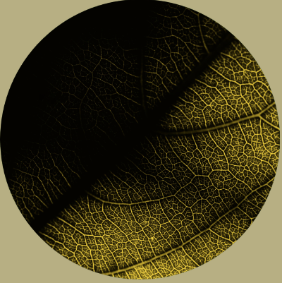

DIREZIONE 2 — EDITORIALE / MORBIDA
Verdure — simulazione sito web
Render statico di homepage e pagina prodotto, desktop e mobile. Contenuti ed immagini dal catalogo tecnico 2026.
HOMEPAGE — DESKTOP
VERDURE
notonlydesign
CONTATTACI
PRODOTTICOLLEZIONIPROGETTISTUDIO

SUSPENDED LIGHT COLLECTION
Non solo design.
Luce che racconta
uno spazio.
Luce che racconta
uno spazio.
Megadot, Superdot e Wiredot nascono dall'incontro tra materia, natura e progetto. Ogni sospensione è pensata per accompagnare l'architettura, non sovrastarla.
Scopri la collezione →

"La luce, come una foglia, vive di venature sottili: la nostra ricerca segue la stessa logica della natura."
— VERDURE STUDIO
LA COLLEZIONE
Suspended Light

MEGADOT

SUPERDOT

WIREDOT
Verdure — notonlydesign
PRODOTTISTUDIOPROGETTICONTATTI
© 2026 Verdure — notonlydesign. Tutti i diritti riservati.
HOMEPAGE — MOBILE
VERDURE
notonlydesign
SUSPENDED LIGHT
Non solo design. Luce che racconta uno spazio.
Megadot, Superdot e Wiredot: la luce che accompagna l'architettura.
Scopri la collezione →
"La luce, come una foglia, vive di venature sottili."
Suspended Light
MEGADOT
SUPERDOT
WIREDOT
Verdure — notonlydesign
© 2026 Verdure — notonlydesign
PAGINA PRODOTTO — DESKTOP
VERDURE
notonlydesign
CONTATTACI
Home / Suspended Light / Wiredot
SUSPENDED LIGHT COLLECTION
Wiredot
Un anello sospeso wireless, con proiettori orientabili che disegnano la luce nello spazio con leggerezza. Pensato per living e ambienti contract di rappresentanza.
FINITURA
Diametro anelloSu richiesta progetto
SorgenteLED integrato
DimmerabileSì
RICHIEDI INFORMAZIONI
Scarica scheda tecnica
Ti potrebbe piacere anche
MEGADOT
SUPERDOT

COMMA
© 2026 Verdure — notonlydesign. Tutti i diritti riservati.
PAGINA PRODOTTO — MOBILE
VERDURE
Home / Suspended / Wiredot
SUSPENDED LIGHT
Wiredot
Anello sospeso wireless con proiettori orientabili, per living e spazi contract.
DiametroSu richiesta
SorgenteLED integrato
DimmerabileSì
RICHIEDI INFORMAZIONI